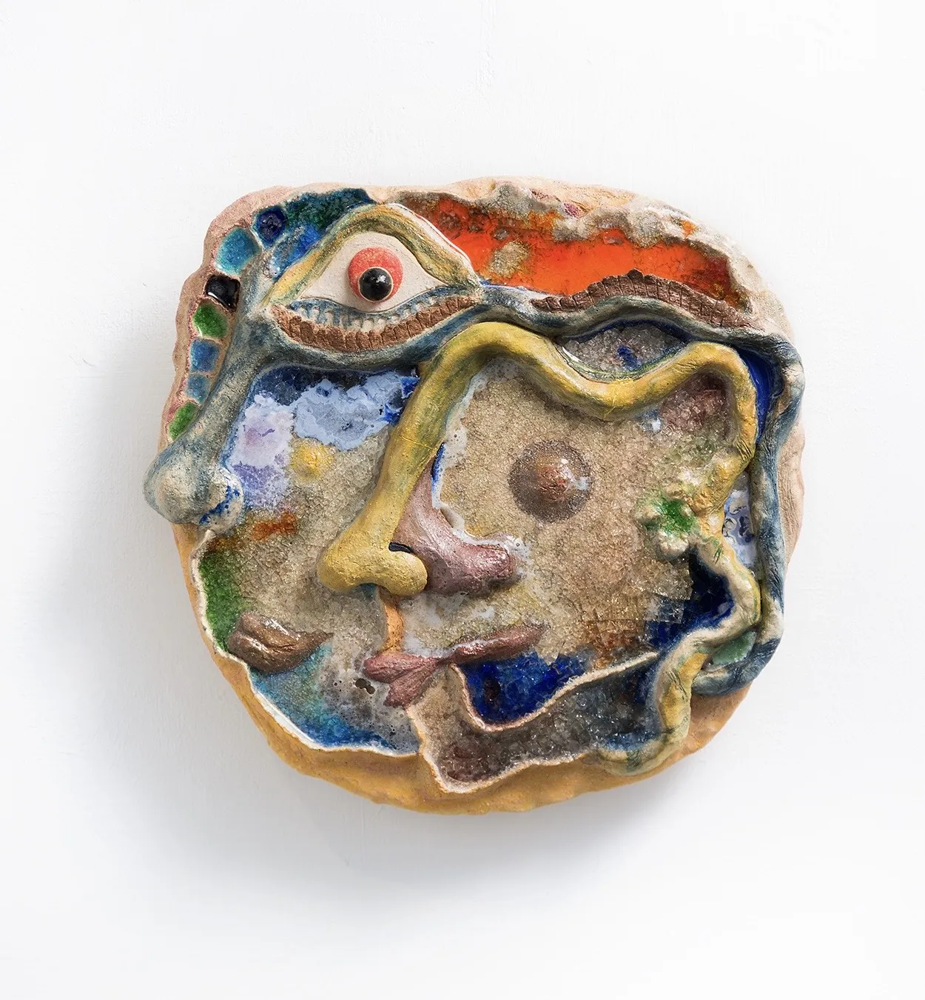
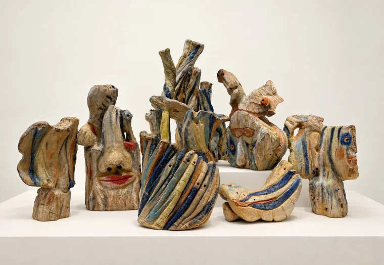
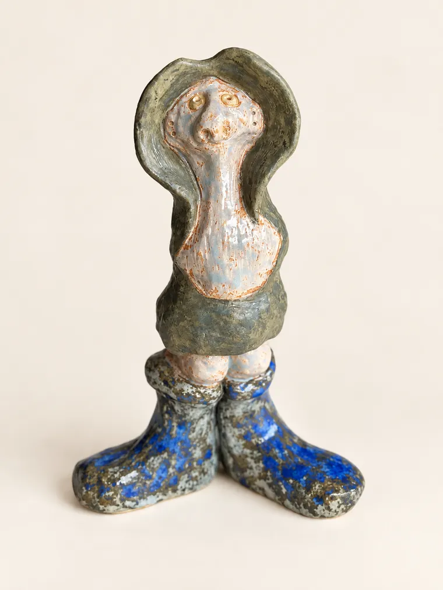
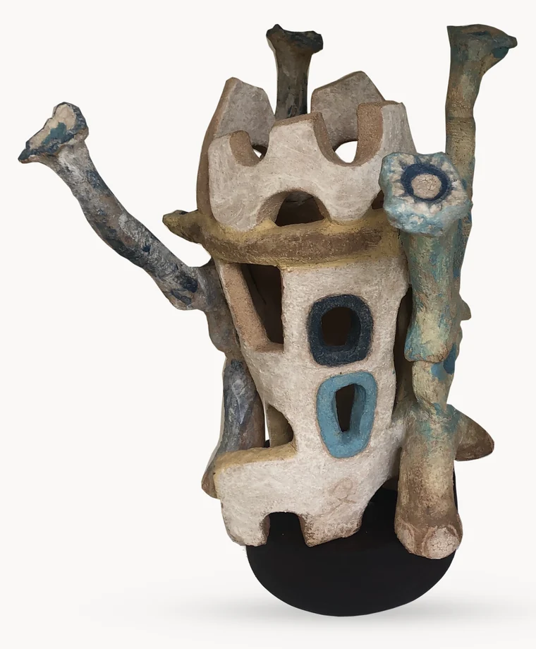
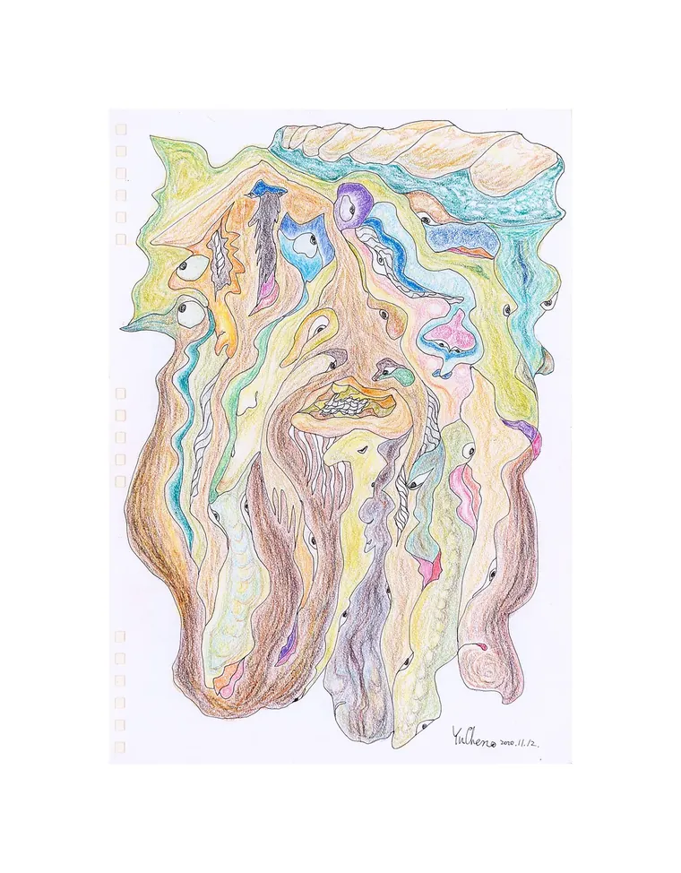
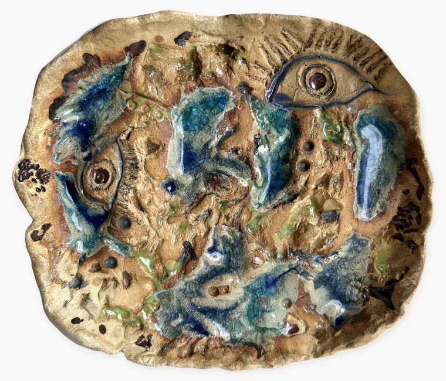
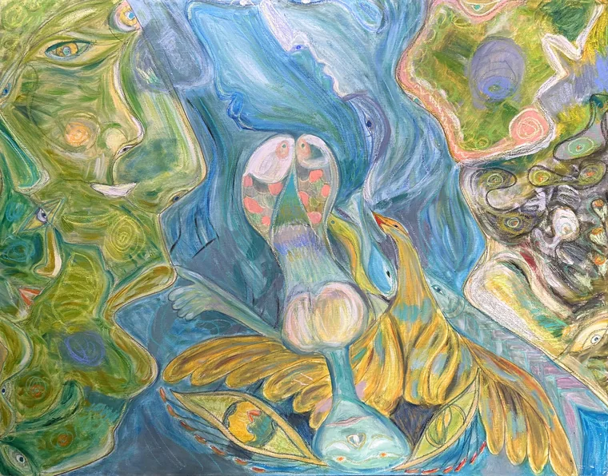
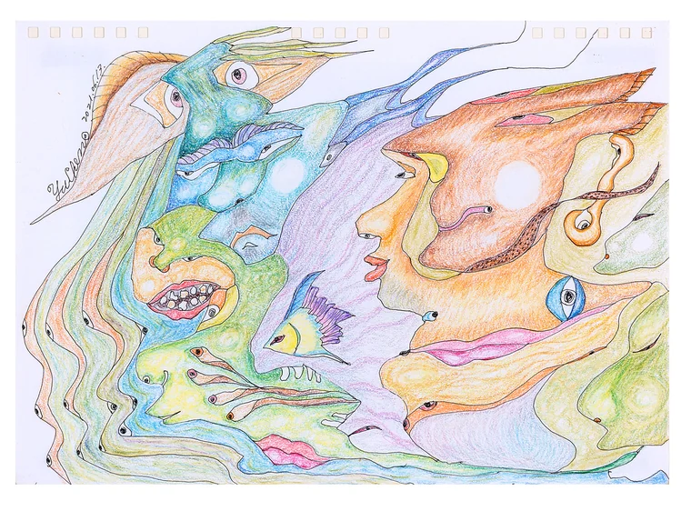
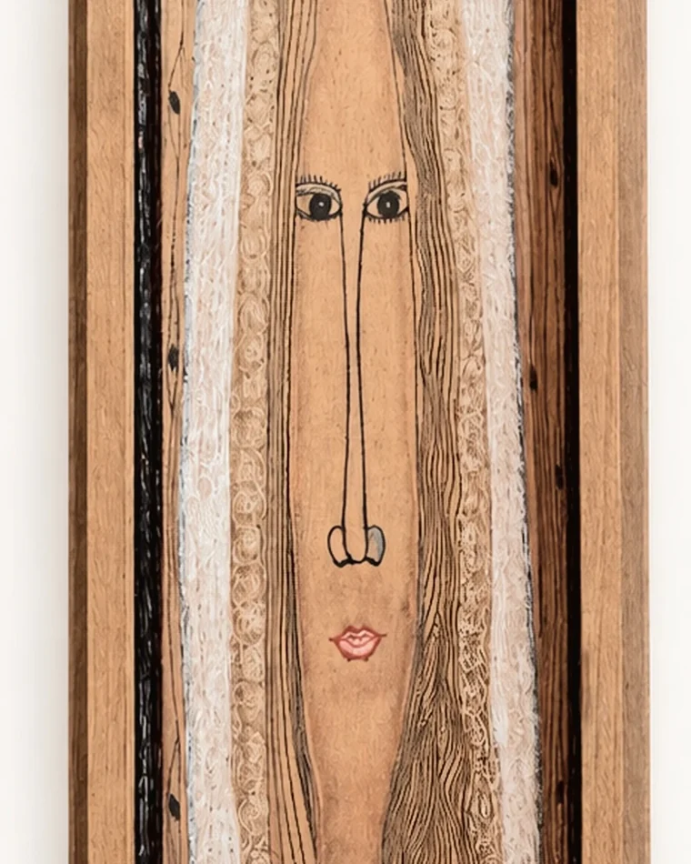

個展 Solo Exhibition
視靈之眼・萬物化形 Eyes That See Spirits · All Things Transform
「視靈之眼・萬物化形」是鄭又禎 2026 年在苗栗竹南 Kalos Art 的個展。六十四件作品從 2010 年的手工書排到 2025 年的 50 號油畫，橫跨陶塑、陶板、油畫、插畫與多媒材。它們不屬於同一個系列，也不在同一種材料裡——把它們連起來的是視靈之眼。 Eyes That See Spirits · All Things Transform is Yuzen Cheng's 2026 solo exhibition at Kalos Art in Zhunan, Miaoli. Its sixty-four works run from a handmade book of 2010 to a 50F oil of 2025, across ceramic, clay panel, oil, drawing and mixed media. They belong to no single series and share no single material — what runs through them all is the eye that sees spirits.
- 2026
- 個展「視靈之眼・萬物化形」｜Kalos Art，竹南，苗栗（1.23–2.28） Solo Exhibition of Ceramics, Eyes That See Spirits · All Things Transform — Kalos Art, Zhunan, Miaoli, Taiwan (23 Jan – 28 Feb)

非表象之延伸 Extension Beyond Representation 展覽以這一件命名。線稿與陶塑並置，側影從紙上走進土裡。 The exhibition takes its name from this work. Drawing and ceramic stand side by side, as a profile steps from paper into clay.
八地神祇 Eight Earth Deities 八座小型祭壇並排，像一整片土地的守護者。 Eight miniature altars in a row, like the guardians of an entire stretch of land.
無言 Wordless 站在自己的一雙鞋上，把話留在嘴裡。 Standing on a pair of shoes of its own, keeping its words inside.
被棲居的形體 The Inhabited Form 兩位巨人一前一後，守護著城堡般的家。 Two giants stand one before the other, guarding a home shaped like a castle.
樹木的傾聽者 Listener of Trees 樹洞裡藏著一整排耳朵與眼睛，聽見了才被畫下來。 A hollow in the trunk holds a row of ears and eyes — drawn only once they had been heard.
被視之域—地景 Field of Being Seen - Landscape 線條直接刻進陶土，讓土地也回望觀看的人。 Line cut directly into clay, so that the land gazes back at whoever looks.
眾視之中—向海而生 Among Many Gazes - Toward the Sea 展出作品裡最大、最新的一件，也是網站上第一幅油畫。 The largest and most recent work in the exhibition, and the first oil painting on this site.
向光而行的形象群 Figures Moving Toward the Light 臉孔與游魚沿著同一條曲線相互轉化，一同向光而行。 Faces and swimming fish turn into one another along a single curve, moving together toward the light.
木中精靈—新娘 Spirit in the Wood - The Bride 2016 年的杉木板，是這檔展覽裡最早的一件。 A 2016 cedar panel, the earliest work in the exhibition.展覽名 → 網站名 Exhibition Title → Site Title
陶與生命容器 Ceramic Beings
展覽中數量最多的一組，九件在這裡換過名字。 The largest group in the exhibition; nine of its works were shown under different titles.
展覽名 → 網站名 Exhibition Title → Site Title
生命的顯現 Manifestation of Life
五件彩稿，展覽時收在「垂落的眾聲」與「眾聲的行進」底下。 Five colored drawings, shown under the headings of voices falling and voices on the move.
展覽名 → 網站名 Exhibition Title → Site Title
古文明的裂生 Ancient Civilization Reborn Through Cracks
三件都被歸進「被視之痕」與「凝視之思」。 All three were placed under traces of being seen and thought of the gaze.
展覽名 → 網站名 Exhibition Title → Site Title
陶塑人格層 Ceramic Persona Layer
三件小型陶塑，展覽時冠上「凝視」與「被視之身」。 Three small ceramic figures, shown as gazes and as a body being seen.
展覽名 → 網站名 Exhibition Title → Site Title
插畫立體化 Illustration to Sculpture
網站上的《非表象之延伸》是線稿與陶塑並置的一件；展覽把兩半拆開，各自命名，而展名就來自其中的陶塑。 On this site, Extension Beyond Representation is one work in which drawing and ceramic stand together. The exhibition separated the two halves and named each; the exhibition's own title comes from the ceramic one.
展覽名 → 網站名 Exhibition Title → Site Title
生命群像層 Life Portraits Layer
兩件群像，展覽時從「凝視」與「束縛」切入。 Two group portraits, approached in the exhibition through gazing and through binding.
展覽名 → 網站名 Exhibition Title → Site Title
心象的流動・木之始 Inner Worlds in Motion & Wood Origin
一幅油畫與一本手工書，各自來自展覽的兩端：最新的一件，與橫跨十年的一件。 An oil painting and a handmade book, from the two ends of the exhibition: the newest work, and the one made across a decade.
陶土、木頭、紙、畫布、馬賽克磁磚各自為政。展覽用「凝視」這個字把這六十四件串起來，網站則讓它們各自回到自己的脈絡裡。兩種看法都成立。 Clay, wood, paper, canvas and mosaic tile each go their own way. The exhibition strung all sixty-four together with the word gaze; this site lets each return to its own lineage. Both readings hold.